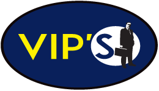
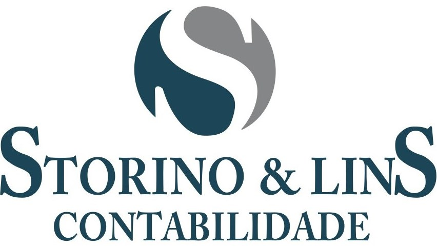
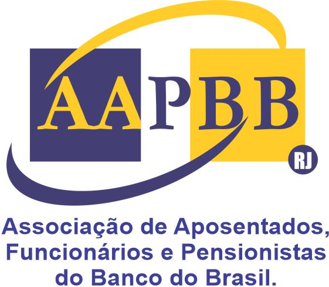
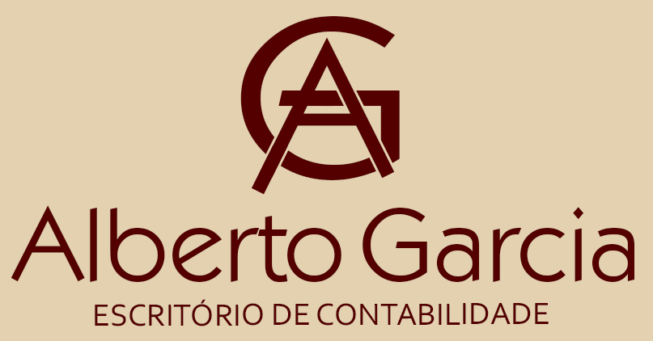
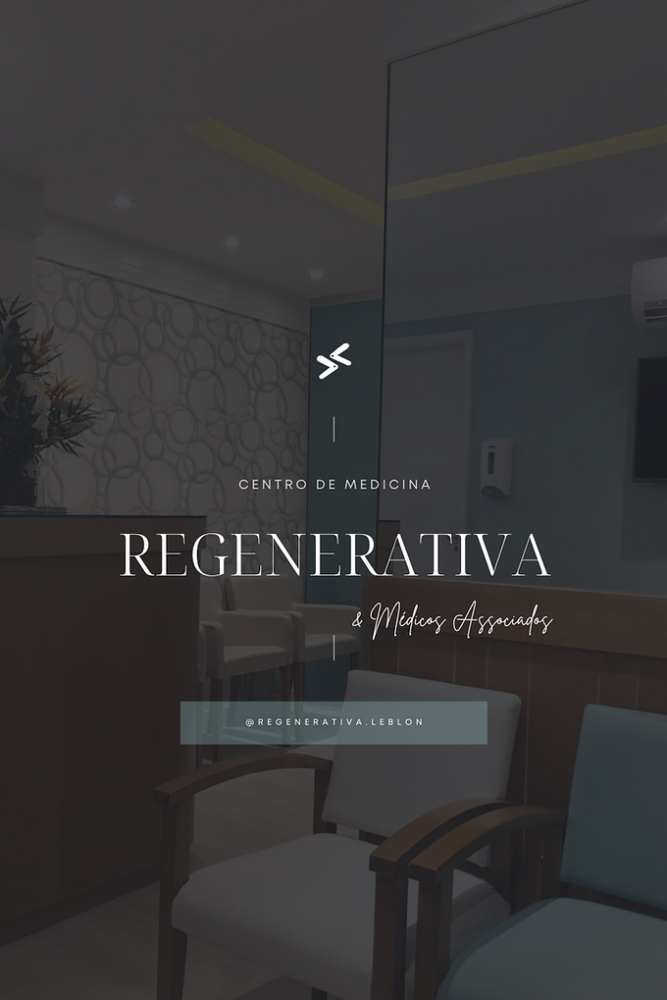
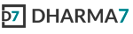
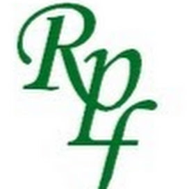
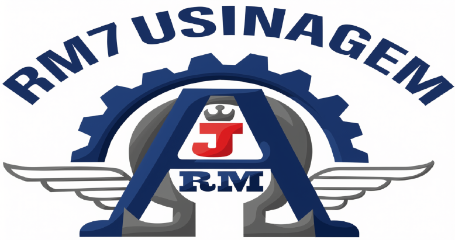

Suporte de TI e Helpdesk Premium no Rio de Janeiro | Zona Sul, Centro e Tijuca
Evitamos travamentos de R$ 200/h para escritórios de contabilidade e consultórios de alto padrão. 26 anos de retaguarda técnica híbrida (presencial + remota + didática).
Empresas e Instituições que Confiam no Nosso Trabalho

Vips Contabilidade
Storino Contabilidade Maisa Santesso
Maisa Santesso

AAPBB (Banco do Brasil)
Alberto Garcia
Regenerativa Medicina Carlos Trigueiro
Carlos Trigueiro

Dharma7
Pennaforte Paulinho Lima
Paulinho Lima
 Luz da Cidade
Luz da Cidade

RM7 UsinagemComo Trabalhamos com Escritórios de Alto Padrão
Estrutura completa em 3 passos para garantir estabilidade técnica, proteção de arquivos fiscais e capacitação da sua equipe.
Diagnóstico Gratuito (15 min)
Mapeamos os gargalos de velocidade das máquinas, falhas na rede e brechas de segurança de dados sem interromper a sua operação.
Plano Preventivo Mensal
Implementamos monitoramento silencioso, rotinas automáticas de backup duplo (AWS + HD local) e manutenção contínua para evitar 90% das panes.
Suporte Didático & IA
Oferecemos suporte humano ágil sem jargões e treinamos sua equipe administrativa em ferramentas de Inteligência Artificial para acelerar rotinas.
Evite Prejuízos Operacionais no Seu Escritório
Pequenas falhas em computadores e a falta de cópias de segurança confiáveis paralisam o faturamento da sua operação.
Máquinas Lentas = Clientes Esperando na Porta
Seu funcionário fica esperando 5 minutos para o computador carregar. Você fica torcendo para que o cliente não reclame da demora. A gente resolve isso em uma única manhã.
Perda de Arquivos Cruciais & Fiscais
Uma pane inesperada em um único HD e anos de prontuários, registros e contratos desaparecem. A gente cria uma blindagem invisível de backup automático local e em nuvem.
Ausência de Posicionamento Digital
Sua empresa não está no Google? Seus concorrentes estão vendendo no seu lugar. A gente constrói sites rápidos e marcas profissionais que geram confiança na primeira busca.
Suporte de TI e Helpdesk para Escritórios na Zona Sul, Centro e Tijuca
Retaguarda completa de suporte técnico, segurança de dados e capacitação corporativa sem complicações ou jargões técnicos.
Computadores que Funcionam Rápido
Não é magia: é manutenção preventiva que evita 90% dos problemas operacionais. Monitoramos suas máquinas para agir antes que quebrem, ou prestamos socorro rápido (remoto ou presencial no RJ) se o sistema parar.
- Otimização de hardware e aceleração de estações
- Reinstalação limpa e rápida de sistemas lentos
- Limpeza interna e prevenção de sobreaquecimento
Arquivos Fiscais e Dados Protegidos (AWS)
Pane física, incêndio ou ataque cibernético. Criamos rotinas automáticas de salvaguarda dupla (nuvem segura da AWS e discos externos criptografados locais) para que nenhuma informação contábil ou contratual seja perdida.
- Backups automáticos sem interromper os funcionários
- Redundância dupla de segurança (Nuvem AWS + Físico)
- Restauração imediata de bancos de dados contábeis
Presença Digital B2B que Transmite Confiança
Desenvolvemos websites leves, rápidos e estruturados para conversão de novos clientes, além de marcas institucionais que transmitem a sofisticação e o peso esperados por tomadores de decisão.
- Websites corporativos rápidos e responsivos
- Logomarcas oficiais e identidade visual sênior
- Copywriting persuasivo focado em captação
Treinamento de Equipe em IA & Didática
Workshops práticos corporativos. Capacitamos secretárias e equipes administrativas no uso produtivo de ferramentas de Inteligência Artificial para automatizar rotinas diárias e otimizar tempo.
- Uso prático de ChatGPT e Google Gemini no escritório
- Aulas de informática didáticas para funcionários
- Boas práticas de segurança de arquivos e LGPD
26 Anos Mantendo Escritórios Rodando no Mundo Real
Arthur trabalha com informática e redes desde o ano 2000
Atua na retaguarda técnica de escritórios de contabilidade, advocacia, clínicas e consultórios de alto padrão no Rio de Janeiro. Com empresa registrada no Catete (Zona Sul), realiza atendimentos presenciais na Zona Sul, Centro e Grande Tijuca, além de assessoria e suporte remoto online para todo o Brasil.
Ao longo de sua trajetória, coordenou o suporte técnico de inclusão digital do Exército Brasileiro (Fundação Trompowsky), da cooperativa Comprove e do CDI-RJ. Entrega atendimento didático, humano e sem jargões complexos, oferecendo respostas rápidas quando a sua operação precisa estar no ar.
Seu escritório não pode parar por falhas de computador ou perda de arquivos
Converse diretamente com o Arthur pelo WhatsApp e solicite um diagnóstico gratuito para a sua empresa.
Dúvidas Frequentes sobre Suporte de TI B2B
Respostas diretas sobre contratos de helpdesk, manutenção preventiva e atendimento no Rio de Janeiro.
Trabalhamos com modelo híbrido sob medida. Oferecemos pacotes mensais recorrentes para escritórios com atendimento remoto instantâneo para chamados do dia a dia e visitas presenciais agendadas na Zona Sul, Centro e Grande Tijuca. Também atendemos empresas de todo o Brasil na modalidade 100% online.
O valor depende do número de estações de trabalho e servidores da sua empresa. Agendamos um diagnóstico gratuito de 15 minutos via WhatsApp para analisar a estrutura do seu escritório e entregar uma proposta empresarial justa sem cobranças ocultas.
Configuramos rotinas automatizadas de redundância dupla: suas informações contábeis e contratuais são criptografadas e salvas em nuvem segura na AWS (Amazon Web Services) e replicadas em mídia física externa no escritório, garantindo total conformidade e recuperação rápida em qualquer imprevisto.
Realizamos workshops práticos diretamente voltados para rotinas administrativas, ensinando a utilizar ferramentas como ChatGPT e Google Gemini para acelerar a redação de documentos, organização de dados e atendimento a clientes com máxima produtividade.